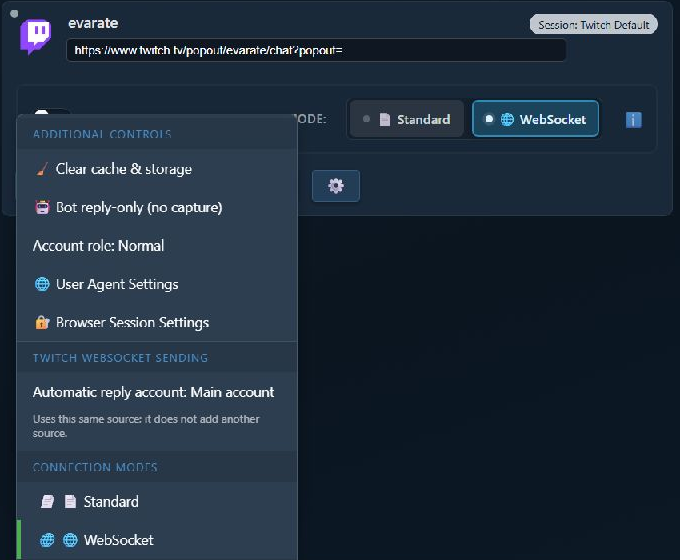
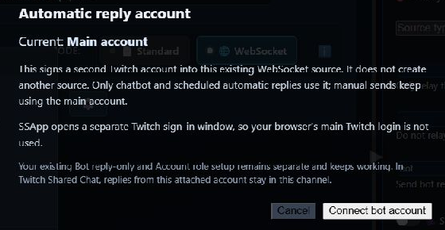
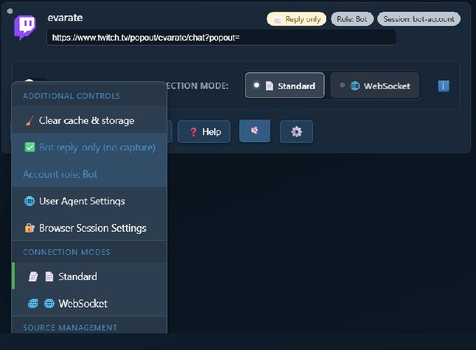
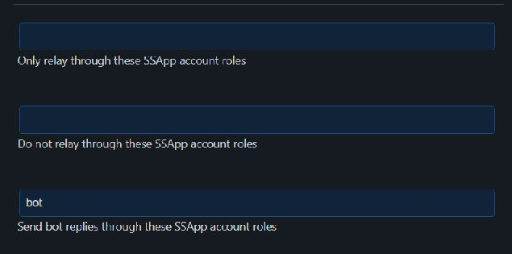

Which Method Should I Use?
Both methods make automatic replies appear under a bot account instead of your main account. They do it in different ways.
The new attached-account method is only for Twitch WebSocket sources in the SSApp desktop app. It is not available for Twitch Standard mode, other platforms, or the browser extension.
| Method | Best for | Extra source? |
|---|---|---|
| Twitch WebSocket bot account | The easiest Twitch-only setup | No |
| Separate reply-only bot source | Twitch Standard mode or another platform that can send replies | Yes |
Method 1: Twitch WebSocket Bot Account
This attaches a second Twitch login to your existing WebSocket source. It does not create another source or permanent browser session.
Tip: Click or tap any screenshot to open it at full size.
- In SSApp, find your Twitch source and make sure WebSocket is selected.
- Click the source's gear button.
- Under Twitch WebSocket sending, click Automatic reply account: Main account.

This section appears only when that Twitch source is using WebSocket mode.
- Review the explanation, then click Connect bot account.
- SSApp opens a separate Twitch sign-in window. Sign in with the account that should send bot replies.
- When the sign-in finishes, the source menu changes to Automatic reply account: @BotName.

The separate sign-in window prevents your normal browser's Twitch login from silently choosing the wrong account.
Pros
- No second source to create or keep running.
- Very little setup after the WebSocket source is connected.
- Chatbot and scheduled automatic replies use the bot account.
- In Twitch Shared Chat, bot replies stay in this source's channel.
Cons
- Twitch only.
- WebSocket mode only.
- Manual sends still use the main Twitch account.
- The bot must be a moderator, or the channel owner may need to reconnect once to approve Twitch bot access.
Method 2: Separate Reply-Only Bot Source
This is the original SSApp method and it is still supported. It creates a second source, gives that source its own browser session, and routes automatic replies through sources with the bot role.
The screenshots below use Twitch, but this method is not Twitch-only. It can also be used with other SSApp sources that support signing in and sending replies.
- Add your normal source for capturing chat.
- Add the same channel or source again. If SSApp asks whether to make it a reply-only bot source, choose Yes.
- On the second source, open Browser Session Settings and use a separate session such as
bot-account. - Click Sign in on that second source and sign in with the bot account.
- Open its gear menu. Enable Bot reply-only (no capture) and cycle Account role until it says Bot.

The finished second source shows Reply only, Role: Bot, and its separate session at the top.
- In the settings panel on the right, switch to full mode and search for bot replies.
- Set Send bot replies through these SSApp account roles to
bot. - Activate the bot source and leave it running whenever it needs to send replies.

Enter bot in this field. The two relay-role fields above it are separate settings and can stay blank.
Pros
- Works with Twitch Standard mode.
- Can work with other platforms that support outgoing replies.
- The bot source has its own browser session and source controls.
- Account roles can support more advanced routing setups.
Cons
- Requires a second source and a separate session.
- The bot source must be active to send.
- More settings must be kept in sync.
- If reply-only is disabled, the second source can capture duplicate messages.
If Both Methods Are Configured
Use one method for a given reply path. If Send bot replies through these SSApp account roles is set to bot, the separate bot source takes priority. SSN will not also send the same reply through the attached Twitch WebSocket bot account.
Troubleshooting
- The new option is missing: confirm this is the SSApp desktop app and the Twitch source is set to WebSocket mode.
- The attached Twitch bot cannot send: make the bot a moderator. If it is not a moderator, reconnect the main Twitch account once using the channel owner and approve the requested permission.
- The wrong Twitch account was selected: choose the account again and sign into the separate SSApp Twitch window with the bot account.
- The separate source sends nothing: activate it, confirm it is signed in as the bot, and verify the routing field contains exactly
bot. - The separate source captures duplicate chat: enable Bot reply-only (no capture).
- Replies still use the main account: verify the attached account is shown by username, or verify the separate source says Role: Bot.